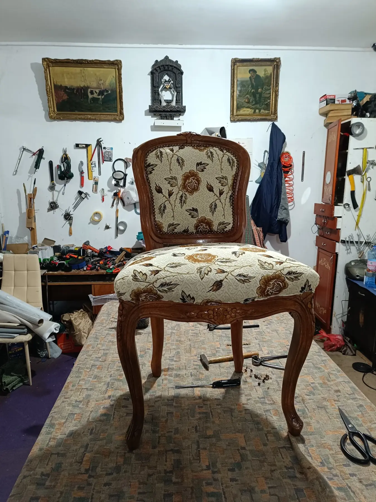
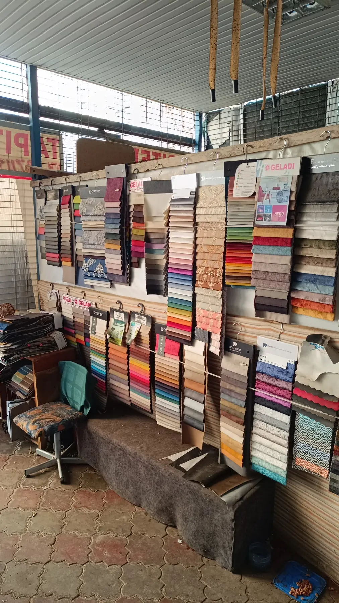

{{tapițerie · Șoseaua Păcurari 39, Iași|upholstery · Șoseaua Păcurari 39, Iași|estofos · Șoseaua Păcurari 39, Iași}}
{{Mobila veche,|Old furniture,|Móveis antigos,}}{{îmbrăcată din nou.|dressed again.|vestidos de novo.}}
{{Scaune sculptate, canapele, colțare și bănci, retapițate în atelierul de pe Păcurari 39. Trimite-ne mobila, dimensiunile și materialul, și primești oferta.|Carved chairs, sofas, corner sofas and benches, reupholstered in the workshop on Păcurari 39. Send us the piece, its size and the material, and get a quote.|Cadeiras entalhadas, sofás, sofás de canto e bancos, reestofados na oficina da Păcurari 39. Envie-nos o móvel, as medidas e o material, e receba o orçamento.}}


{{ce îmbrăcăm|what we cover|o que forramos}}
{{Ce trece prin atelier.|What goes through the workshop.|O que passa pela oficina.}}
{{Lucrări din pozele atelierului de pe Păcurari 39. Atinge piesa ca să ceri oferta pentru una la fel.|Work from the Păcurari 39 workshop’s own photos. Tap a piece to ask for a quote for one like it.|Trabalhos das fotos da própria oficina da Păcurari 39. Toque numa peça para pedir orçamento para uma igual.}}
{{Ce materiale sunt în magazin și la ce preț:|Which materials are in the shop and at what price:|Que materiais há na loja e a que preço:}} {{de confirmat|to be confirmed|a confirmar}}
{{cum ceri oferta|how to get a quote|como pedir orçamento}}
{{Trei lucruri și știm ce lucrăm.|Three things and we know the job.|Três coisas e sabemos o trabalho.}}
- {{Măsori|Measure|Meça}}
{{Lățimea, adâncimea și înălțimea, cu ruleta, în centimetri. Aproximativ e destul la început.|Width, depth and height, with a tape, in centimetres. Rough figures are enough to start.|Largura, profundidade e altura, com a fita, em centímetros. Aproximado chega para começar.}}
- {{Fotografiezi|Take photos|Fotografe}}
{{Din față și din lateral, plus locurile rupte sau lăsate. Pozele le trimiți pe WhatsApp, după cerere.|Front and side, plus the torn or sagging spots. Send the photos on WhatsApp after the request.|De frente e de lado, mais as zonas rasgadas ou abatidas. Envie as fotos por WhatsApp depois do pedido.}}
- {{Alegi stofa|Pick the fabric|Escolha o tecido}}
{{Pe viu, din peretele cu mostrare din magazinul de pe Păcurari 39.|In person, from the wall of sample books in the shop on Păcurari 39.|Ao vivo, na parede de mostruários da loja da Păcurari 39.}}
{{cerere ofertă|quote request|pedido de orçamento}}
{{Fișa ta, cu mostra prinsă în colț.|Your slip, with the swatch pinned on.|A sua ficha, com a amostra presa ao canto.}}
Anton Giovani
{{FIȘĂ DE OFERTĂ · PĂCURARI 39|QUOTE SLIP · PĂCURARI 39|FICHA DE ORÇAMENTO · PĂCURARI 39}}
{{Prețul îl stabilește atelierul după poze sau după ce vede mobila:|The workshop sets the price from photos or after seeing the piece:|O preço é definido pela oficina a partir das fotos ou depois de ver o móvel:}} {{de confirmat|to be confirmed|a confirmar}}
{{WhatsApp pe acest număr:|WhatsApp on this number:|WhatsApp neste número:}} {{de confirmat|to be confirmed|a confirmar}}
{{pe Google|on Google|no Google}}
{{29 de clienți au dat notă.|29 customers left a rating.|29 clientes deram nota.}}
{{Citește recenziile pe Google|Read the reviews on Google|Ler as avaliações no Google}}
{{program|hours|horário}}
{{Știm sigur programul de joi, de la 7 dimineața. Pentru celelalte zile, sună înainte.|We know Thursday’s hours for sure, from 7 a.m. For other days, call first.|Sabemos ao certo o horário de quinta, a partir das 7 da manhã. Para os outros dias, ligue antes.}}
{{magazinul|the shop|a loja}}
{{Șoseaua Păcurari 39, Iași.|Șoseaua Păcurari 39, Iași.|Șoseaua Păcurari 39, Iași.}}
Anton Giovani
Șoseaua Păcurari 39, Iași
0742 971 192{{Cere ofertă|Get a quote|Pedir orçamento}}
{{Cod Plus: 5GFV+QH Iași. Cod poștal:|Plus Code: 5GFV+QH Iași. Postcode:|Plus Code: 5GFV+QH Iași. Código postal:}} {{de confirmat|to be confirmed|a confirmar}}